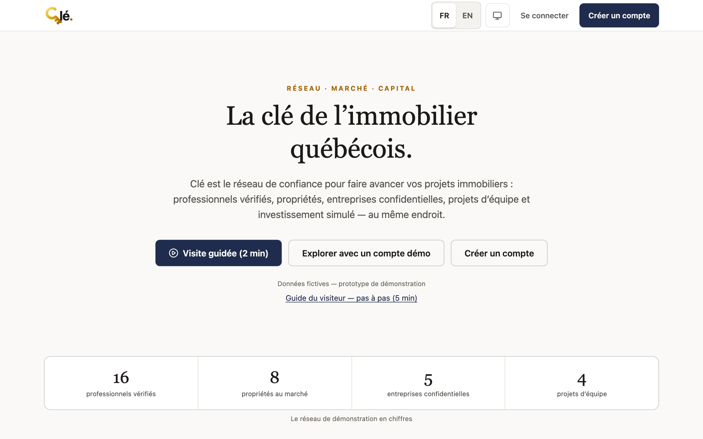

1
Open the demo
DOOpen ssocciarelli.github.io/cle-mvp — desktop or phone, French by default, EN toggle top right.
YOU'LL SEEThe landing page: three buttons, the demo network's live numbers, and the "fictional data" notice.
Short on time? "Visite guidée (2 min)" tours everything automatically — eight stops, no clicking needed.
